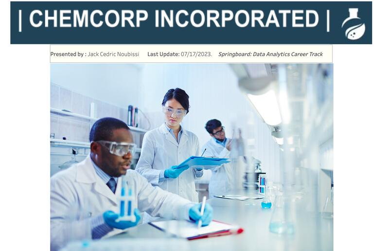
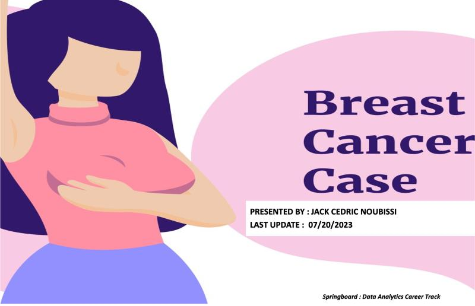
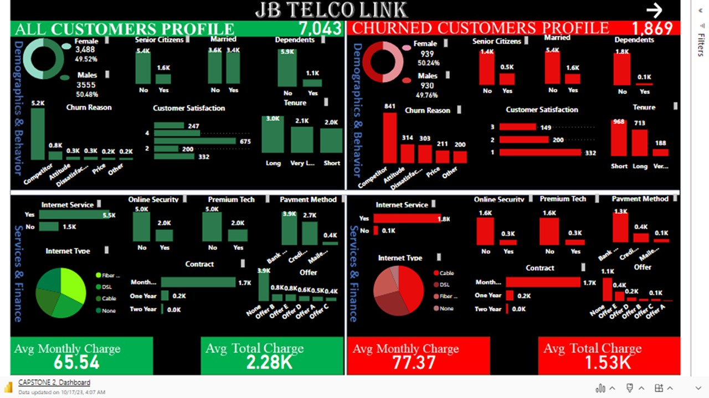
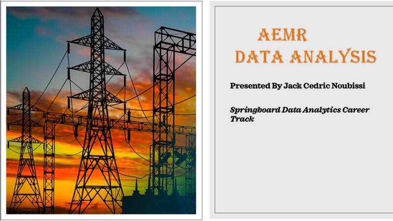
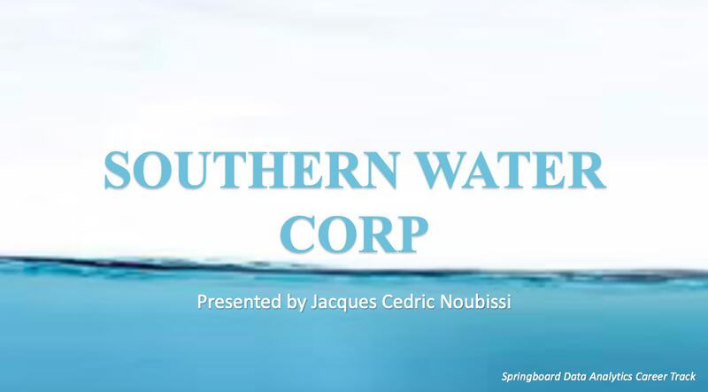

Southern Water Corp is an Israeli water desalination company that provides fresh water to Residential, Public, and Private customers. They improved their desalination plants to meet rising demand, boosting revenue. They remain dedicated to controlling costs even as revenue grows. My goal was to analyze Financial Data and present a detailed performance overview, focusing on EBIT, Revenues, and Operational Expenses.
.

ChemCorp, a leading chemical producer, faced increased competition and lost five long-term customers, impacting 10% of sales revenue. My goal was to identify future growth industries and potential divestment products to prevent further erosion of market share, financial instability, and decline in dividend payments.

With this project, my aim was to utilize data-driven insights to grasp at least 40% of the picture surrounding breast cancer care disparities and outcomes. I firmly believe that this endeavor has the potential to illuminate the reasons behind the variations in breast cancer outcomes, uncovering valuable insights that could pave the way for targeted interventions and policy changes
This project exposes a customer churn analysis at JB Link telco with intention to reduce the churn rate by at least 3% in both the short term and long term

A dashboard tracking the metrics was build on purpose of camparing all the customers profile to JB Link Telco's Churned customers profile

The AEMR management team had grown increasingly concerned about the rising number of energy providers reporting outages.
My mission was clear: address two pivotal areas :
Energy Stability and Market Outages ;
Energy Losses, and Market Reliability.

In this project, I used Python for data cleaning,visualizations and inferential statistics which allowed me to identiy and take out the main outliers accounting for the variations in pump failure